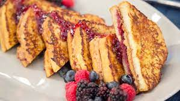

PB&J Stuffed French Toast

Description
A mashup of two favorites: PB&J and French toast. Ready in a few minutes, this stuffed French toast is simply delicious, just like peanut butter and jelly.
Ingredients
- 8 thick slices brioche bread
- 1/4 cup peanut butter
- 1/4 cup jelly
- 3 large eggs
- 1/2 cup whole milk
- 1/2 teaspoon cinnamon
- 1/4 cup (1/2 stick) butter, divided
- 1/2 tablespoon powdered sugar, or to taste (for dusting)
Steps
- Spread 1 tablespoon peanut butter over the center of 4 slices of bread, taking care not to spread it all the way to the edges.
Repeat with remaining bread slices and jelly. Place peanut butter slices on top of the jelly slices to make a peanut butter and jelly sandwich.
- Whisk eggs, milk, and cinnamon together in a shallow dish until well combined.
Place one sandwich in egg mixture, allowing it to soak through just slightly. Flip and repeat.
- Heat 1 tablespoon butter in a skillet over medium heat. Place sandwich into skillet and cook until golden and lightly toasted, about 4 minutes.
Flip and repeat until egg is cooked through and the sandwich is toasted on both sides. Repeat with the remaining sandwiches, egg mixture, and butter.
- Dust with powdered sugar and serve immediately.